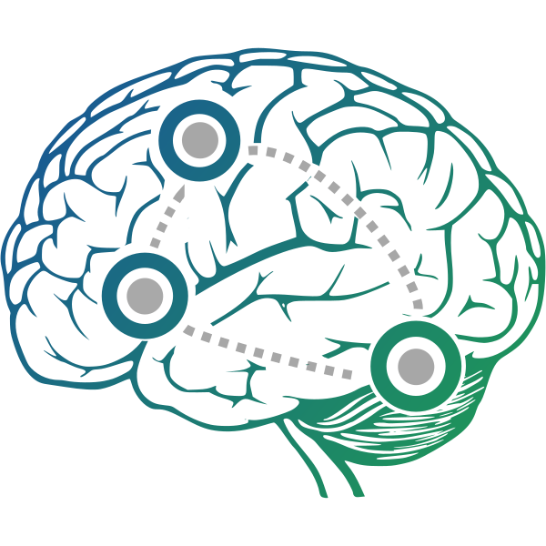
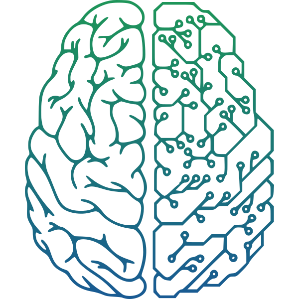

Welcome to Yuan's home page.
I am an EE PhD candidate at Tandon School of Engineering of New York University, supervised by Prof. Yao Wang and cosupervised by Prof. Yvonne W. Lui. I treat myself as a data scientist, doing image/video processing with machine/deep learning. Besides other infomation, you can find exibitions of my projects and technicla blogs on this web. Hope you enjoy.
Selected Projects
 
You can use the editor on GitHub to maintain and preview the content for your website in Markdown files.
Whenever you commit to this repository, GitHub Pages will run Jekyll to rebuild the pages in your site, from the content in your Markdown files.